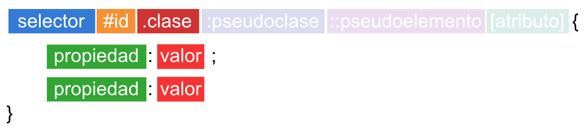
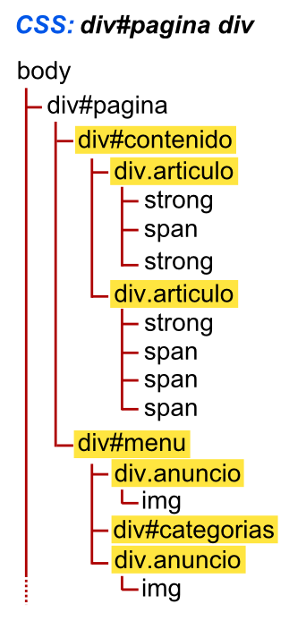
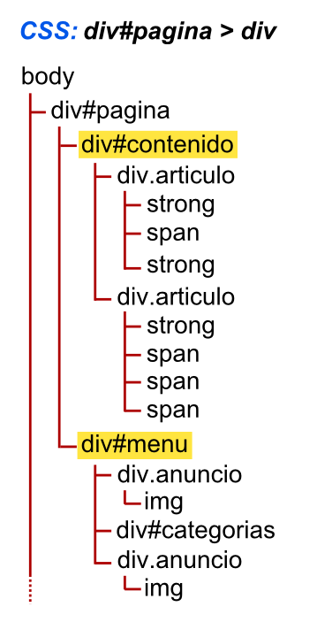
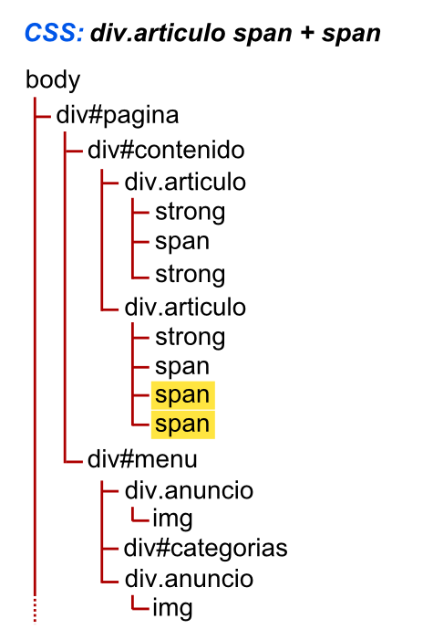
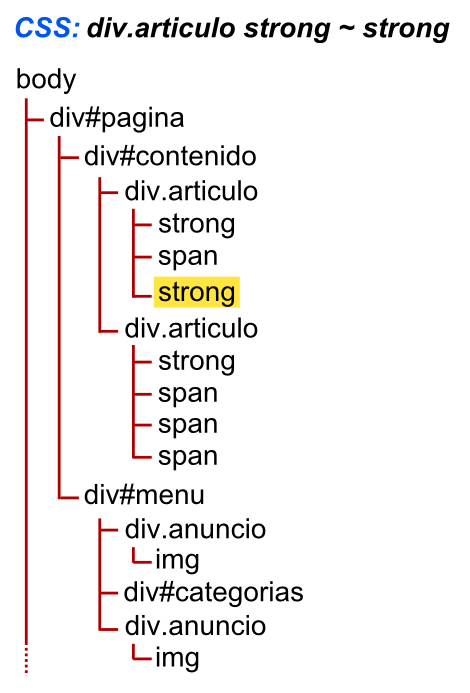
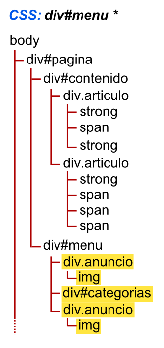
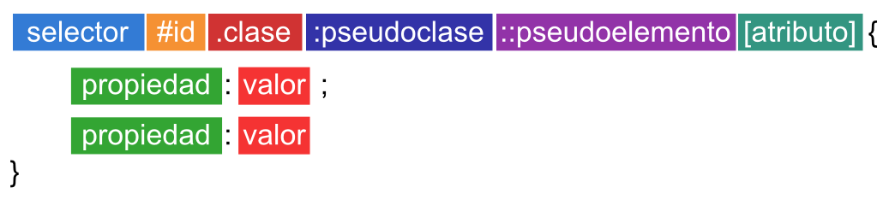
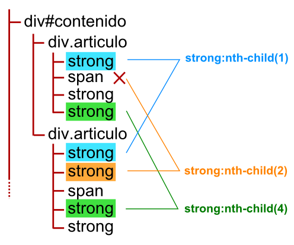
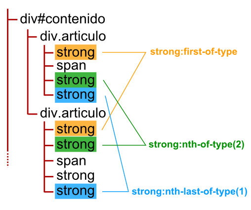
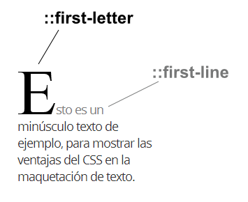

Selectores CSS¶
Selectores CSS básicos¶
Cuando comenzamos a trabajar con CSS, es habitual dar estilo con ejemplos muy sencillos, donde generalmente utilizamos un selector genérico que representa (por ejemplo) una etiqueta HTML. Sin embargo, lo que estamos haciendo en realidad es seleccionar todos los elementos del documento que sean dicha etiqueta.
Por ejemplo, consideremos el siguiente caso:
div {
background-color: red;
}
En este ejemplo, le decimos al navegador que a todas las etiquetas div que encuentre en la página, le ponga color de fondo rojo. La parte donde he colocado div es lo que se denomina selector, y puede llegar a ser mucho más complejo y potente, como veremos en los siguientes capítulos.
La verdadera potencia de CSS radica en la capacidad de poder seleccionar sólo los elementos que nos interesen, ya que a medida que el documento HTML crece, aparecerán nuevos elementos que podrían adoptar ese estilo, y ser eso algo que no nos interese.

Aunque el esquema general es mucho más amplio (lo iremos viendo todo, poco a poco), para empezar, vamos a centrarnos en la sintaxis básica de los selectores CSS, y la más utilizada: los ID y las clases.
Seleccionar por etiquetas¶
Como ya hemos mencionado, la forma más básica de seleccionar elementos en CSS es indicar el elemento al cuál queremos aplicarle los estilos. Esto se comportará como parece lógico: aplicando el estilo CSS a TODOS los elementos de ese tipo:
strong {
color: red;
}
En el ejemplo anterior, todos los elementos marcados con la etiqueta HTML <strong> se visualizarán de color rojo. Este pequeño ejemplo es didáctico pero no suele ser práctico, ya que no nos permite diferenciar entre todos los elementos de ese tipo. Para ello tenemos los selectores que veremos a continuación.
Seleccionar por ID (únicos)¶
Todas las etiquetas HTML pueden tener un atributo id con un valor concreto. Este valor será el nombre que le daremos a la etiqueta. Un buen símil con la vida real es la de un DNI o tarjeta de identificación, ya que la particularidad clave de los ID es que no se deben repetir, es decir, que sólo debe haber una etiqueta con el mismo ID por documento. Veamos un ejemplo:
<!DOCTYPE html>
<html>
<head>
<title>Documento de ejemplo</title>
</head>
<body>
<div id="saludo">
<p>¡Hola, visitante! ¡Bienvenido a esta página!</p>
</div>
<div id="main">
<p>En esta página encontrarás los siguientes temas:</p>
</div>
</body>
</html>
En el documento anterior, encontramos dos elementos <div>. El primero de ellos, tiene ID saludo, una capa donde se le da la bienvenida al usuario. La segunda, con ID main, es una capa donde hay contenido. Sería incorrecto crear otra etiqueta con ID saludo o main en este mismo documento, ya que ya existe una con esos nombres.
En la práctica no suelen utilizarse demasiado los IDs, ya que en la mayoría de los casos utilizar una clase es perfectamente válido y mucho más mantenible a la larga. La situación en la que los IDs están bien utilizados, es cuando se usan para designar una zona del documento que sabemos perfectamente que no se va a repetir, y debe ser identificada como una zona única.
#saludo {
background-color: blue;
color: white;
}
Como podemos ver en el ejemplo, en CSS la forma de hacer referencia a los IDs es con el símbolo #, mientras que en el HTML se indica el atributo id="saludo".
Seleccionar por clases¶
A medida que vamos codificando y creando nuestros documentos HTML, comprobaremos que necesitamos cosas más flexibles y cómodas que los IDs, ya que los elementos tienden a repetirse y no deben ser únicos. Aquí es donde entran en escena las clases de CSS.
Las etiquetas HTML pueden tener otro atributo interesante: class. La diferencia principal respecto a los IDs es que las clases no se requiere que sean únicas, sino que pueden repetirse a lo largo del documento HTML:
<!DOCTYPE html>
<html>
<head>
<title>Documento de ejemplo</title>
</head>
<body>
<div id="main">
<p>Escoge uno de los siguientes botones:</p>
<button class="classic">Opción 1</button>
<button class="classic">Opción 2</button>
<button class="classic">Opción 3</button>
<button class="back">Volver</button>
</div>
</body>
</html>
En el documento HTML anterior, tenemos cuatro botones HTML. Los 3 primeros son botones de opciones, por lo que establecemos una misma clase llamada classic, mientras que el último botón (un botón para volver hacia atrás), le hemos indicado la clase back para que tenga un estilo diferente a los anteriores.
Para hacer esto con IDs (recordemos que son únicos, no deberían repetirse) tendríamos que crear 3 IDs con nombres diferentes, mientras que con las clases (las cuales si se pueden repetir) podemos reutilizar el mismo nombre. Esto nos permite indicar en la parte de CSS un sólo selector con los estilos y reutilizarlos en todos los elementos HTML que se desee.
.classic {
background-color: green;
color: white;
}
.back {
background-color: orange;
color: white;
}
En CSS se hace referencia a las clases con un punto: .classic, mientras que en el HTML se escribiría el atributo class="classic".
Además, en el caso de las clases, podemos incluso diferenciar el tipo de elemento del que se trata. Gracias a esto podríamos utilizar la clase .classic en <button> para dar estilo visual a botones, y la clase .classic en <p> para dar otros estilos diferentes a los párrafos de texto:
button.classic {
background-color: green;
color: white;
}
p.classic {
color: red;
}
Selecciones mixtas¶
Al margen de todo lo que hemos visto, es posible utilizar varias clases en un mismo elemento HTML, simplemente separando por espacios dentro del atributo class.
De esta forma, a dicho elemento se le aplicarán los estilos de cada una de las clases indicadas, las cuales suelen tener un grupo de características relacionadas con su nombre, lo cuál es interesantes y muy práctico de recordar, dándonos mucha soltura a la hora de crear clases y reutilizarlas:
<button class="classic green-border big">Botón</button>
Este enfoque se considera uno de los principios del denominado CSS atómico, en el que se basan frameworks CSS como Tachyons o TailwindCSS.
Por último, mencionar que también tenemos la posibilidad de ser más específicos y aplicar estilo sólo a los elementos HTML que contengan todas las clases indicadas, colocando cada clase de forma consecutiva en el CSS, de la siguiente forma:
button.classic.green-border.big {
/* Estilos CSS */
}
En este ejemplo, sólo se aplicarán los estilos cuando el elemento HTML <button> tenga una clase classic, una clase green-border y una clase big. Si falta alguna de ellas, no se aplicará el estilo.
Selectores CSS avanzados¶
Al margen de la selección «básica» de elementos a través de CSS, que suele realizarse mediante clases e IDs, existe un amplio abanico de métodos para seleccionar elementos dependiendo de la estructura del documento HTML denominados combinadores CSS:
| Nombre | Símbolo | Ejemplo | Significado |
|---|---|---|---|
| Agrupación de selectores | , |
p, a, div { } |
Se aplican estilos a varios elementos. |
| Selector descendiente | #page div { } |
Se aplican estilos a elementos dentro de otros. | |
| Selector hijo | > |
#page > div { } |
Se aplican estilos a elementos hijos directos. |
| Selector hermano adyacente | + |
div + div { } |
Se aplican estilos a elementos que siguen a otros. |
| Selector hermano general | ~ |
div ~ div { } |
Se aplican estilos a elementos al mismo nivel. |
| Selector universal | * |
#page * { } |
Se aplican estilos a todos los elementos. |
En los siguientes apartados, veremos varios ejemplos gráficos sobre un supuesto ejemplo de documento HTML, dibujado en forma de árbol esquemático. Así sabremos que elementos están dentro de otros y nos será más fácil entender cada uno de los combinadores CSS.
Agrupación de selectores¶
En muchas ocasiones nos ocurrirá que tenemos varios bloques CSS con selectores diferentes pero con los mismos estilos exactamente, algo que generalmente no es apropiado. Si esto ocurre a menudo, el tamaño del documento CSS ocupará más y tardará más en descargarse:
.container-logo {
border-color: red;
background: white;
}
.container-alert {
border-color: red;
background: white;
}
.container-warning {
border-color: red;
background: white;
}
Una buena práctica es ahorrar texto y simplificar nuestro documento CSS lo máximo posible, por lo que podemos hacer uso de la agrupación CSS utilizando la , (coma).
De esta forma, podemos pasar de tener el ejemplo anterior, a tener el siguiente ejemplo (que es totalmente equivalente), donde hemos utilizado la agrupación para decirle al navegador que aplique dichos estilos las diferentes clases:
.container-logo, .container-alert, .container-warning {
border-color: white;
background: red;
}
Al margen de esto, dos buenas prácticas que podríamos aplicar en esta situación serían las siguientes:
-
Simplifica por responsabilidades:
.container-alerty.container-warningparecen tener un concepto muy similar: alertas o mensajes de advertencia. Es posible que estos selectores tengan la misma funcionalidad y sean sinónimos. Si es así, lo ideal sería refactorizar y simplificarlos a uno:.container-warning, haciendo desaparecer el otro. -
Legibilidad por delante: CSS por si sólo puede ser dificil de leer y mantener. Aunque a priori puede parecer que es mejor poner la lista de selectores uno detrás de otro, la experiencia nos dicta que deberíamos separarlos en una línea diferente cada selector. Esto lo hace tremendamente más legible a la hora de revisar código CSS.
.container-logo, .container-warning { border-color: white; background: red; }
Consejo: Esto puede parecer poco importante a priori, pero a medida que avanzamos con nuestro diseño, los documentos CSS se hacen tremendamente grandes y difíciles de mantener, por lo que cuanto más sencillos sean, mejor.
Selector descendiente¶
En CSS podemos utilizar lo que se llama el selector descendiente, que no es más que una forma de seleccionar ciertos elementos que están dentro de otros elementos. Esto puede parecer sencillo, pero cuidado, ya que puede ser una fuente de problemas si no se entiende bien.
Su sintaxis se basa en colocar los elementos uno a continuación de otro, separado por un espacio:
div#pagina div {
background-color: blue;
}
En el ejemplo anterior, aplicamos los estilos CSS (color azul de fondo) a todos los elementos <div> que estén dentro de un <div> con ID pagina. De esta forma, si existe un elemento <div> fuera del <div> con id pagina, no se aplicarán los estilos indicados:

Repasemos varios detalles importantes respecto a este combinador CSS:
- Se están seleccionando todos los elementos
<div>que están dentro de<div>con ID pagina. - Observa que se seleccionan independientemente del nivel al que estén (hijos, abuelos, ...)
- En este caso, el
divdediv#paginaes innecesario, ya que habíamos dicho que los IDs no se pueden repetir. Si ya existe un elemento con ID pagina, no hace falta diferenciarlo también por etiqueta. Si se tratase de una clase, si podría usarse.
Se pueden construir selectores muy complejos con tantos elementos como se quiera, pero una buena práctica es mantenerlos simples. Cuántos más elementos descendientes existan en un selector, más complejo será el procesamiento de dicha regla por los navegadores. Lo recomendable es ser despierto y utilizar sólo los necesarios.
<div class="menu">
<div class="options">
<ul>
<li><a href="/one">Option 1</a></li>
<li><a href="/two">Option 2</a></li>
<li><a href="/three">Option 3</a></li>
</ul>
</div>
</div>
Observando el fragmento de código HTML anterior, veamos las siguientes 2 formas de aplicar estilos CSS a los enlaces <a>:
/* Forma 1 */
.menu .options ul li a {
color: orange;
}
/* Forma 2 */
.menu a {
color: orange;
}
Mientras que la primera es mucho más específica, es una muy buena práctica en CSS mantener los selectores lo menos específicos posibles para evitar problemas de Especificidad (a.k.a. CSS Peter Griffin):

Selector hijo¶
Aunque el selector descendiente es bastante interesante, nos puede interesar hacer la misma operación, pero en lugar de seleccionar todos los elementos descendientes, seleccionar sólo los descendientes directos del elemento con el símbolo >, descartando así nietos y sucesivos.
#pagina > div {
background-color: blue;
}
Veamos los elementos seleccionados en el documento de ejemplo para afianzar conceptos:

Al contrario que en el caso anterior, no se seleccionan todos los elementos <div> descendientes, sino solo aquellos que son hijos directos del primer elemento especificado.
Selector hermano adyacente¶
Es posible también hacer referencia a los elementos hermanos, es decir, aquellos elementos que están directamente a continuación del elemento especificado. Mediante el símbolo + del selector hermano adyacente, se pueden seleccionar aquellos elementos hermanos que están seguidos el uno de otro (en el mismo nivel):
div.articulo span + span {
color: blue;
}
Cómo se podrá ver en este nuevo ejemplo, este combinador CSS hará que se seleccionen los elementos span que estén a continuación de un div.articulo span:

Obsérvese que el primer elemento <span> no es seleccionado, puesto que es el que estamos tomando de base. Una buena forma para entenderlo es leerlo de la siguiente forma: «todo elemento <span> que esté inmediatamente precedido de un <span>».
Selector hermano general¶
Si pensamos otras opciones en el ejemplo anterior, es posible que necesitemos ser menos específicos y en lugar de querer seleccionar los elementos hermanos que sean adyacentes, queramos seleccionar todos los hermanos en general, sin necesidad de que sean adyacentes. Esto se puede conseguir con el selector hermano general, simbolizado con el carácter ~:

Como se ve en el ejemplo, no es necesario que el elemento strong se encuentre adyacente al primero, sino que basta con que sean hermanos en el mismo nivel.
Selector universal¶
Por último, el selector universal se simboliza con un asterisco * y es la forma de aplicar ciertos estilos en TODOS Y CADA UNO de los elementos HTML correspondientes.

Este ejemplo selecciona todos los elementos dentro de div#menu. Es importante recalcar la diferencia de seleccionar #menu, a seleccionar todos los elementos dentro de #menu, que es lo que estamos haciendo en este caso.
El selector universal puede ser muy útil en algunos casos para resetear ciertas propiedades de todo un documento, como en el siguiente ejemplo, donde se eliminan los márgenes de todos los elementos del documento HTML, puesto que algunos navegadores ponen márgenes diferentes y esto puede producir ciertas inconsistencias en los diseños:
/* Elimina márgenes y rellenos de todos los elementos de un documento HTML */
* {
margin: 0;
padding: 0;
}
Pseudoclases CSS¶
Las pseudoclases se utilizan para hacer referencia a ciertos comportamientos de los elementos HTML. Así como los combinadores CSS se utilizan para dar estilos dependiendo de donde estén colocados en la estructura del HTML, las pseudoclases se utilizan para dar estilos a elementos respecto al comportamiento que experimentan en determinado momento.
Volvamos a recordar el esquema general de sintaxis de CSS:

Las pseudoclases se definen añadiendo dos puntos antes de la pseudoclase concreta. En el caso de existir selectores de etiqueta, id o clases, estas se escribirían a su izquierda.
Pseudoclases de enlaces¶
Existen algunas pseudoclases orientadas a los enlaces o hipervínculos. En este caso, permiten cambiar los estilos dependiendo del comportamiento del enlace:
| Pseudoclase | Descripción |
|---|---|
:link |
Aplica estilos cuando el enlace no ha sido visitado todavía. |
:visited |
Aplica estilos cuando el enlace ha sido visitado anteriormente. |
A continuación veremos un ejemplo donde seleccionamos mediante un simple selector a los enlaces que aún no han sido visitados, cambiando el color de los mismos o su formato, lo que mostrará dichos enlaces de color verde y en negrita:
a:link {
color: green;
font-weight: bold
}
Por otro lado, la pseudoclase :visited puede utilizarse para dar estilo a los enlaces que hayan sido visitados previamente en el navegador del usuario:
a:visited {
color: purple;
font-weight: bold
}
Pseudoclases de ratón¶
Originalmente, las siguientes pseudoclases se utilizaban solamente en enlaces (Internet Explorer no los soportaba en otros elementos). Sin embargo, actualmente pueden ser utilizadas con seguridad en cualquier otro elemento, sin necesidad de ser <a>.
| Pseudoclase | Descripción |
|---|---|
:hover |
Aplica estilos cuando pasamos el ratón sobre un elemento. |
:active |
Aplica estilos cuando estamos pulsando sobre el elemento. |
La primera de ellas, :hover, es muy útil e interesante, ya que permite aplicar estilos a un elemento justo cuando el usuario está pasando el ratón sobre él. Es una de las pseudoclases más utilizadas:
/* Usuario mueve el ratón sobre un enlace */
a:hover {
background-color: cyan;
padding: 2px
}
/* Usuario mueve el ratón sobre un div y resalta todos los enlaces que contiene */
div:hover a {
background-color: steelblue;
color: white;
}
Observese que podemos realizar acciones un poco más específicas, como el segundo ejemplo anterior, donde al movernos sobre un elemento div (div:hover), aplicaremos los estilos a los enlaces (a) que están dentro del mencionado div.
Por otro lado, la segunda pseudoclase, :active, permite resaltar los elementos que se encuentran activos, donde el usuario está pulsando de forma activa con el ratón:
a:active {
border: 2px solid #FF0000;
padding: 2px
}
Nota: Aunque las pseudoclases anteriores se inventaron para interactuar con un ratón en un sistema de escritorio, pueden funcionar en dispositivos táctiles. Aún así, ten en cuenta que, por ejemplo, el
:hoverno tiene mucho sentido en dispositivos móviles, ya que, aunque podría hacerlo, un usuario no navega por móvil arrastrando el dedo por la pantalla.
Pseudoclases de interacción¶
Existen pseudoclases orientadas principalmente a los campos de formulario de páginas webs y la interacción del usuario con ellos, veamos otro par interesante:
| Pseudoclase | Descripción |
|---|---|
:focus |
Aplica estilos cuando el elemento tiene el foco. |
:checked |
Aplica estilos cuando la casilla está seleccionada. |
Cuando estamos escribiendo en un campo de texto de un formulario de una página web, generalmente pulsamos TAB para cambiar al siguiente campo y SHIFT+TAB para volver al anterior. Cuando estamos posicionados en un campo se dice que ese campo tiene el foco, mientras que al pulsar TAB y saltar al siguiente, decimos que pierde el foco.
El comportamiento de «ganar el foco» puede gestionarse mediante la pseudoclase :focus:
/* El campo ha ganado el foco */
input:focus {
border: 2px dotted #444
}
Nota: Aunque estas pseudoclases suelen utilizarse con elementos de formularios como
<input>, también pueden utilizarse con otros elementos, como por ejemplo los enlaces<a>. Esta es una excelente oportunidad para personalizar el estilo de los campos de texto de un formulario (<input>y<textarea>) mientras el usuario escribe y se mueve por ellos.
Por otro lado, la pseudoclase :checked permite aplicar el estilo especificado a los elementos <input> (casillas de verificación o botones de radio) u <option> (la opción seleccionada de un <select>).
Por ejemplo, se podría utilizar el siguiente fragmento de código:
input:checked + span {
color: green;
}
Este ejemplo añade el selector hermano + para darle formato al <span> que contiene el texto y se encuentra colocado a continuación de la casilla <input>. De esta forma, los textos que hayan sido seleccionados, se mostrarán en verde.
Pseudoclases de activación¶
Por norma general, los elementos de un formulario HTML están siempre activados, aunque se pueden desactivar añadiendo el atributo disabled (es un atributo booleano, no lleva valor) al elemento HTML en cuestión. Esto es una práctica muy utilizada para impedir al usuario escribir en cierta parte de un formulario porque, por ejemplo, no es aplicable.
Existen varias pseudoclases para detectar si un campo de un formulario está activado o desactivado:
| Pseudoclase | Descripción |
|---|---|
:enabled |
Aplica estilos cuando el campo del formulario está activado. |
:disabled |
Aplica estilos cuando el campo del formulario está desactivado. |
:read-only |
Aplica estilos cuando el campo es de sólo lectura. |
:read-write |
Aplica estilos cuando el campo es editable por el usuario. |
Utilizando las dos primeras pseudoclases, bastante autoexplicativas por si solas, podemos seleccionar elementos que se encuentren activados (comportamiento por defecto) o desactivados:
/* Muestra en fondo blanco las casillas que permiten escribir */
input:enabled {
background-color: white;
}
/* Muestra en fondo gris las casillas que no permiten escribir */
input:disabled {
background-color: grey;
}
Por otro lado, las pseudoclases read-only y read-write nos permiten seleccionar y diferenciar elementos que se encuentran en modo de solo lectura (tienen especificado el atributo readonly en el HTML) o no:
input:read-only {
background-color: darkred;
color: white
}
En el ejemplo anterior, la pseudoclase :read-only le da estilo a aquellos campos <input> de un formulario que están marcados con el atributo de sólo lectura readonly. La diferencia entre un campo con atributo disabled y un campo con atributo readonly es que la información del campo con readonly se enviará a través del formulario, mientras que la del campo con disabled no se enviará. Aún así, ambas no permiten modificar el valor.
Nota: Ten en cuenta que
:read-onlyaplicará los estilos a todos los elementos HTML que no puedan ser modificados por el usuario.
Por otro lado, la pseudoclase :read-write es muy útil para dar estilos a todos aquellos elementos que son editables por el usuario, sean campos de texto <input> o <textarea>.
input:read-write {
background-color: green;
color: white
}
Nota: La pseudoclase
read-writeda estilo también a elementos HTML que contengan el atributocontenteditable, como por ejemplo un párrafo editable por el usuario con dicho atributo.
Pseudoclases de validación¶
En HTML5 es posible dotar de capacidades de validación a los campos de un formulario, pudiendo interactuar desde Javascript o incluso desde CSS. Con estas validaciones podemos asegurarnos de que el usuario escribe en un campo de un formulario el valor esperado que debería. Existen algunas pseudoclases útiles para las validaciones, como por ejemplo las siguientes:
| Pseudoclase | ¿Cuándo aplica estilos? |
|---|---|
:required |
Cuando el campo es obligatorio, o sea, tiene el atributo required. |
:optional |
Cuando el campo es opcional (por defecto, todos los campos). |
:invalid |
Cuando los campos no cumplen la validación HTML5. |
:valid |
Cuando los campos cumplen la validación HTML5. |
:out-of-range |
Cuando los campos numéricos están fuera del rango. |
:in-range |
Cuando los campos numéricos están dentro del rango. |
En un formulario HTML es posible establecer un campo obligatorio que será necesario rellenar para enviar el formulario. Por ejemplo, el DNI de una persona que va a matricularse en un curso, o el nombre de usuario de alta en una plataforma web para identificarse. Campos que son absolutamente necesarios.
Para hacer obligatorios dichos campos, tenemos que indicar en el HTML el atributo required, al cuál será posible darle estilo mediante la pseudoclase :required:
input:required {
border: 2px solid blue;
}
Por otra parte, los campos opcionales (no obligatorios, sin el atributo required) pueden seleccionarse con la pseudoclase :optional:
input:optional {
border: 2px solid grey;
}
Las validaciones en formularios HTML siempre han sido un proceso tedioso, hasta la llegada de HTML5. HTML5 brinda un excelente soporte de validaciones desde el lado del cliente, pudiendo comprobar si los datos especificados son correctos o no antes de realizar las validaciones en el lado del servidor, y evitando la latencia de enviar la información al servidor y recibirla de vuelta.
Ojo: Ten en cuenta que la validación de cliente es apropiada solo para reducir la latencia de envío/recepción al servidor, pero nunca como estrategia para evitar problemas de seguridad o similares, para la cuál se debe tener validación en el servidor siempre. Las validaciones utilizadas en frontend, es posible falsearlas o saltárselas.
Imaginemos un campo de entrada en el que queremos obtener la edad del usuario. Nuestra intención es que solo se puedan introducir números. Para ello hacemos uso de la expresión regular [0-9]+, que significa «una o más cifras del 0 al 9»:
<input type="text" name="age" pattern="[0-9]+" />
Sin embargo, el atributo pattern permite expresiones regulares realmente complejas, como por ejemplo, una expresión regular para validar el formato de un DNI, ya sea en el formato nacional de España (12345678L) o en formato NIE (X1234567L), aceptando guiones si se indican:
<input type="text" name="dni"
pattern="(([X-Z]{1})([-]?)(\d{7})([-]?)([A-Z]{1}))|((\d{8})([-]?)([A-Z]{1}))" />
Se pueden aplicar ciertos estilos dependiendo de si se cumple o no el patrón de validación, utilizando las siguientes pseudoclases:
input:invalid {
background-color: darkred;
color: white;
}
input:valid {
background-color: green;
color: white;
}
Sin embargo, en la validación numérica que vimos anteriormente, un usuario podría escribir 500, que es una edad imposible, porque en el patrón de validación indicamos «una o más cifras del 0 al 9». Lo ideal sería establecer un rango, algo que se suele hacer muy a menudo si tenemos campos numéricos de formulario:
<input type="number" name="age" min="18" max="100" />
Este campo permite al usuario especificar su edad, utilizando los atributos de validación min y max, que sólo permiten valores entre 18 y 100 años. Los valores fuera de este rango, no serán válidos.
De la misma forma que antes, es posible aplicar estilos para los valores fuera de rango, como dentro de rango:
input:out-of-range {
background-color: darkred;
color: white;
}
input:in-range {
background-color: green;
color: white;
}
Pseudoclases de negación¶
Existe una pseudoclase muy útil, denominada pseudoclase de negación. Permite seleccionar todos los elementos que no cumplan los selectores indicados entre paréntesis.
Veamos un ejemplo:
p:not(.general) {
border: 1px solid #DDD;
padding: 8px;
background: #FFF;
}
Este pequeño fragmento de código nos indica que todos los párrafos (elementos <p>) que no pertenezcan a la clase general, se les aplique el estilo especificado.
Consejo: Las reglas de negación pueden ser complejas, ineficientes y poco escalables. Intenta utilizarlas sólo en los casos que sea absolutamente necesario.
Otras pseudoclases¶
Para finalizar el apartado de pseudoclases, quiero mencionar algunas que no encajan en los apartados anteriores, pero que pueden ser muy útiles en algunos casos:
| Pseudoclase | Significado |
|---|---|
:lang(es) |
Aplica estilo a los elementos con el atributo lang="es". |
:target |
Aplica estilo al elemento que coincida con el ancla de la URL. |
:root |
Aplica estilo al elemento raíz (padre) del documento. |
:default |
Experimental. Aplica estilo al elemento por defecto. Útil en formularios |
:dir(A) |
Experimental. Aplica estilo al elemento que coincide con la dirección ltr o rtl. |
:indeterminate |
Experimental. Aplica estilo a la casilla checkbox o al elemento <progress> sin definir. |
:fullscreen |
Experimental. Aplica estilo si la página está en el modo de pantalla completa. |
:scope |
Experimental. Aplica estilo a los elementos en el ámbito indicado. |
:any(A) |
Experimental. Aplica estilo si coincide con algún elemento indicado en A. |
Otras pseudoclases como :first, :left, :right o :blank las mencionamos en el capítulo de medios paginados.
Pseudoclases CSS avanzadas¶
Existen varias pseudoclases que permiten hacer referencias a los elementos del documento HTML según su posición y estructura de los elementos hijos. A continuación muestro un pequeño resumen de estas pseudoclases:
| Pseudoclase | Descripción |
|---|---|
:first-child |
Primer elemento hijo (de cualquier tipo). |
:last-child |
Último elemento hijo (de cualquier tipo). |
:nth-child(n) |
N-elemento hijo (de cualquier tipo). |
:nth-last-child(n) |
N-elemento hijo (de cualquier tipo) partiendo desde el final. |
Para ello, volvamos a utilizar una estructura en forma de árbol para ver cómodamente la ubicación de cada uno de los elementos.
Las dos primeras pseudoclases, :first-child y :last-child hacen referencia a los primeros y últimos elementos (al mismo nivel) respectivamente.
strong:first-child {
background-color:cyan;
}
strong:last-child {
background-color:green;
}

Sin embargo, si no queremos quedarnos en los primeros o últimos elementos y necesitamos más potencia para elegir, podemos hacer uso de la pseudoclase :nth-child(A), que permite especificar el elemento deseado, simplemente estableciendo su número en el parámetro A:
| Número | Equivalente a la pseudoclase | Significado |
|---|---|---|
strong:nth-child(1) |
strong:first-child {} |
Primer elemento hijo, que además es un <strong> |
strong:nth-child(2) |
Segundo elemento hijo, que además es un <strong> |
|
strong:nth-child(3) |
Tercer elemento hijo, que además es un <strong> |
|
strong:nth-child(n) |
Todos los elementos hijos que son <strong> |
|
strong:nth-child(2n) |
Todos los elementos hijos pares <strong> |
|
strong:nth-child(2n-1) |
Todos los elementos hijos impares <strong> |
A continuación puedes comprobar los valores de la tabla anterior de un modo más visual y práctico, estableciendo en el campo de texto valores como
n,n+2,2n,2n-1(o similares) y observando los resultados.
:nth-child()
.nth-test { display: flex; flex-direction: column; align-items: center; } .nth-test input { padding: 5px; max-width: 70px; margin-bottom: 0.5em; font-family: var(--header-font); font-size: 18px; } .nth-test .table { display: flex; flex-wrap: wrap; } .nth-test .cell { border: 1px solid #aaa; width: 75px; height: 32px; margin: 3px; } const nth = document.querySelector(".nth-test"); const input = nth.querySelector("input"); const table = nth.querySelector(".table"); const style = nth.querySelector(".nth-style"); for (let i = 0; i < 60; i++) { const div = document.createElement("div"); div.className = "cell"; table.appendChild(div); } input.onkeyup = (ev) => { const value = ev.target.value; style.textContent = `.nth-test .cell:nth-child(${value}) { background: green; }`; }
Veamos además un ejemplo gráfico:

Como se aprecia en el ejemplo, en el caso :nth-child(2) se puede ver como el segundo elemento lo ocupa un elemento span, por lo que sólo se selecciona el elemento strong del segundo caso, donde si existe.
Elementos del mismo tipo¶
En los casos anteriores, seleccionamos elementos independientemente de que elemento sea. Simplemente, hacemos caso a la posición donde está ubicado. Si queremos hacer referencia sólo a elementos del mismo tipo, utilizaremos los selectores siguientes, análogos a los anteriores, pero haciendo referencia sólo a elementos del mismo tipo:
| Pseudoclase | Descripción |
|---|---|
:first-of-type |
Primer elemento hijo (de su mismo tipo). |
:last-of-type |
Último elemento hijo (de su mismo tipo). |
:nth-of-type(n) |
N-elemento hijo (de su mismo tipo). |
:nth-last-of-type(n) |
N-elemento hijo (de su mismo tipo) partiendo desde el final. |
Las pseudoclases :first-of-type y :last-of-type son las equivalentes a :first-child y :last-child pero sólo teniendo en cuenta elementos del mismo tipo. Por otro lado, la pseudoclase :nth-of-type(A) es la equivalente a :nth-child(A) y :nth-last-of-type(A) es la equivalente a :nth-last-child(A). Veamos un ejemplo sobre el ejercicio anterior:

En este ejemplo, se puede ver como :nth-of-type(2) selecciona el segundo elemento strong en ambos casos, a pesar de que en el primero ocupa la tercera posición. En este caso se selecciona porque es el segundo elemento de su mismo tipo (<strong>).
Por otro lado, :nth-last-of-type(A) hace una selección de forma inversa, empezando por el último elemento.
Hijos únicos¶
Existen también varias pseudoclases para la gestión de hijos únicos. Son las siguientes:
| Pseudoclase | Descripción |
|---|---|
:only-child |
Elemento que es hijo único (de cualquier tipo). |
:only-of-type |
Elemento que es hijo único (de su mismo tipo). |
:empty |
Elemento vacío (sin hijos, ni texto). |
La propiedad :only-child nos proporciona un método para aplicar estilo a aquellos elementos que sean el único hijo de su elemento padre. Además, como ha ocurrido anteriormente, también existe la pseudoclase :only-of-type que es equivalente al anterior pero sólo para elementos del mismo tipo, es decir, que puede ser que no sea el único elemento hijo, pero sí el único de su tipo.
Muy relacionada está también la pseudoclase :empty, que permite seleccionar los elementos que estén vacíos. Ojo con esto, ya que un elemento que contenga comentarios HTML <!-- --> la pseudoclase :empty lo detectará como vacío, pero si contiene espacios en blanco, no.
Pseudoelementos CSS¶
Al igual que las pseudoclases, los pseudoelementos son otra de las características de CSS que permiten hacer referencias a «comportamientos virtuales no tangibles», o lo que es lo mismo, se le puede dar estilo a elementos que no existen realmente en el HTML, y que se pueden generar desde CSS.
Recordemos la sintaxis de los pseudoelementos, que está precedida de dos puntos dobles (::) para diferenciarlos de las pseudoclases, las cuales sólo tienen dos puntos (:). No obstante, este cambio surgió posteriormente, por lo que aún hoy en día es frecuente ver fragmentos de código con pseudoelementos con la sintaxis de pseudoclase con un solo par de puntos :.
Generación de contenido¶
Dentro de la categoría de los pseudoelementos CSS, como punto central, se encuentra la propiedad content. Esta propiedad se utiliza en selectores que incluyen los pseudoelementos ::before o ::after, para indicar que vamos a crear contenido antes o después del elemento en cuestión:
| Propiedad/Pseudoelemento | Descripción |
|---|---|
content |
Propiedad para generar contenido. Sólo usable en ::before o ::after. |
::before |
Aplica los estilos antes del elemento indicado. |
::after |
Aplica los estilos después del elemento indicado. |
La propiedad content admite parámetros de diverso tipo, incluso concatenando información mediante espacios. Podemos utilizar tres tipos de contenido:
| Valor | Descripción | Ejemplo |
|---|---|---|
| "string" | Añade el contenido de texto indicado. | content: "Contenido:"; |
| attr(atributo) | Añade el valor del atributo HTML indicado. | content: attr(href); |
| url(URL) | Añade la imagen indicada en la URL. |
content: url(icon.png); |
Por otro lado, los pseudoelementos ::before y ::after permiten hacer referencia a «justo antes del elemento» y «justo después del elemento», respectivamente. Así, se podría generar información (usualmente con fines decorativos) que no existe en el HTML, pero que por circunstancias de diseño sería apropiado colocar:
q::before {
content: "«";
color: #888;
}
q::before {
content: "»";
color: #888;
}
Los ejemplos anteriores insertan el carácter « antes de las citas indicadas con el elemento HTML <q> y el carácter » al finalizar la misma, ambas de color gris.
Atributos HTML¶
Es interesante recalcar la utilidad de la expresión attr(), que en lugar de generar el contenido textual que le indiquemos, permite recuperar esa información del valor del atributo HTML especificado. Veamos un ejemplo para clarificarlo, concatenándolo con texto:
a::after {
content: " ( " attr(href) " )";
}
Este pequeño ejemplo muestra a continuación de todos los enlaces la URL literalmente, dentro de dos paréntesis. Esto puede ser realmente útil en una página de estilos que se aplica a una página en el momento de imprimir, en los cuales se pierde la información del enlace al no ser un medio interactivo.
Truco: También se puede utilizar la expresión url() para añadir una imagen al contenido generado, tal y como lo hacemos en la propiedad
background, por ejemplo.
Primera letra y primera línea¶
También existen pseudoelementos con los que podemos hacer referencia a la primera letra de un texto. Para ello utilizamos el pseudoelemento ::first-letter, así como el pseudoelemento ::first-line si queremos hacer referencia a la primera línea de un texto. De esta forma, podemos dar estilo a esas secciones concretas del texto:
| Pseudoelemento | Descripción |
|---|---|
::first-letter |
Aplica los estilos en la primera letra del texto. |
::first-line |
Aplica los estilos en la primera línea del texto. |
Veamos un ejemplo en acción sobre un párrafo de texto:
p {
color: #333;
font-family: Verdana, sans-serif;
font-size: 16px;
}
p::first-letter {
color: black;
font-family: 'Times New Roman', serif;
font-size: 42px;
}
p::first-line {
color: #999;
}
Esto puede darnos la posibilidad de dar formato a un texto con ciertas propiedades, como cuentos clásicos:

Signos de las listas (markers)¶
Existe también un pseudoelemento para hacer referencias a los signos o marcas de la listas (<ol> o <ul>), en el caso de que queramos que tengan, por ejemplo, un color diferente al del texto de la lista.
Se aplican a los elementos <li> de los ítems de una lista. Veamos un ejemplo:
ul ::marker {
color: green;
}
Esto mostraría el texto de la lista con el color habitual que tenga (por ejemplo, negro), pero los signos que preceden a cada ítem de la lista, aparecerían en color verde. Hay que tener cuidado, puesto que el soporte de esta característica aún no es muy bueno.
Otros pseudoelementos¶
Existen otros pseudoelementos quizás menos conocidos:
| Pseudoelemento | Descripción | Soporte |
|---|---|---|
::backdrop |
Aplica estilos al fondo exterior de la ventana de diálogo mostrada. | |
::input-placeholder |
Aplica estilos a los textos de sugerencia de los campos de entrada. | Soporte |
::selection |
Aplica estilos al fragmento de texto seleccionado por el usuario. | Soporte |
Atributos CSS¶
Por último, una característica muy interesante de CSS es la posibilidad de aplicar estilos dependiendo de la existencia o el contenido de ciertos atributos de los elementos HTML. En CSS, estos atributos se rodean de corchetes [] y hay varias formas de utilizarlos, inspirados en un concepto llamado expresiones regulares:
| Atributo | ¿Cuándo se aplica el estilo? |
|---|---|
[href] |
Si el elemento tiene atributo href. |
[href="#"] |
Si el elemento tiene atributo href y su valor es #. |
[href*="emezeta"] |
Si el elemento tiene atributo href y su valor contiene emezeta. |
[href^="https://"] |
Si el elemento tiene atributo href y su valor comienza por https://. |
[href$=".pdf"] |
Si el elemento tiene atributo href y su valor termina por .pdf (un enlace a un PDF). |
[class~="emezeta"] |
Si el elemento tiene atributo class con una lista de valores y uno de ellos es emezeta. |
[lang|="es"] |
Si el elemento tiene atributo lang con una lista de valores, donde alguno empieza por es-. |
Atributo existente¶
Para empezar, podemos utilizar el atributo [style] para seleccionar todas las etiquetas HTML que contengan un atributo style para darles estilos en línea a un elemento. Estos elementos, aparecerían con fondo rojo:
[style] {
background: red;
}
Este ejemplo es didáctico y no tiene finalidad práctica de diseño, ya que la idea sería mostrar visualmente que elementos tienen esa característica, algo que podría interesarle a un desarrollador. Si el elemento no tiene un atributo style definido, no se le aplican los estilos.
Atributo con valor exacto¶
Pero la potencia de los atributos en CSS es que podemos indicar el valor exacto que deben tener para que sean seleccionados. Para ello, simplemente utilizamos el = y escribimos el texto entre comillas dobles:
a[rel="nofollow"] {
background: red;
}
Este ejemplo selecciona los enlaces <a> que tienen un atributo rel establecido a nofollow. Esta es una característica que le indica a Google (u otros robots o crawlers) que ese enlace no se debería tener en cuenta para seguirlo, algo que puede ser realmente útil para desincentivar SPAM en comentarios, por ejemplo.
Atributo contiene texto¶
En lugar de un valor específico, también podemos querer indicar un fragmento de texto que debe estar incluído, pero que no es el texto íntegro, casando con varias posibles coincidencias:
a[href*="emezeta"] {
background-color: orange;
}
En la siguiente tabla se pueden ver varios ejemplos de enlaces, y cuáles se seleccionarían en este caso:
| Etiqueta | Valor del atributo href | ¿Seleccionado? |
|---|---|---|
<a> |
https://www.emezeta.com/ | Sí |
<a> |
https://www.emezeta.com/articulos/alternativas-a-bootstrap | Sí |
<a> |
https://www.google.com/ | No, no incluye emezeta |
<a> |
https://www.google.com/search?q=emezeta | Sí |
<a> |
emezeta | Sí |
<link> |
https://www.emezeta.com/index.css | No, no es <a> |
De la misma forma, existe una variante que utiliza el comparador ~=. Esta variante nos permitiría seleccionar los elementos HTML que tengan un atributo con una lista de palabras separadas por espacios, donde una de ellas es el texto que hemos escrito a continuación. Se trata de una versión más restrictiva del comparador *=.
Comienzo/final de atributo¶
Otro recurso bastante útil es la posibilidad de seleccionar elementos dependiendo del texto con el que empiezan o con el que acaban en el valor de un atributo específico. Veamos un ejemplo, donde se apreciará mucho mejor esta funcionalidad:
a[href]::before {
content: url(icon_url.png);
padding-right: 3px;
}
a[href$=".pdf"]::before {
content: url(icon_pdf.png);
}
a[href]::after {
content: ": " attr(href);
display: inline-block;
color: #666;
}
Obtendremos el siguiente resultado:
-
El primer bloque CSS mostrará un icono (icon_url.png) antes (
::before) de cualquier enlace con el atributohref. -
El segundo bloque CSS sobrescribimos la regla anterior si se trata de un enlace donde el atributo
hrefacaba en.pdf. Si es así, mostramos el icono de un archivo PDF (icon_pdf.png). -
Por último, el tercer bloque se aplica a cualquier enlace con un atributo
href, cambiamos el modo de representación condisplay: inline-block, para que el subrayado sólo afecte al enlace en sí.
Recuerda que también es posible seleccionar el principio de un atributo, utilizando ^= en lugar de $=, como podemos ver en el siguiente ejemplo:
a[href^="http://"]::after {
content: " (Página no segura): " attr(href);
display: inline-block;
color: #666;
}
Ojo: En el segundo caso del ejemplo anterior, sólo se seleccionarían los enlaces que tengan un fichero
iantes del cierre]del atributo:
a[href$=".pdf" i]::before {
content: url(icon_pdf.png);
}
De esta forma no tendríamos problemas ese problema, ya que esa i hace referencia a «case **i**nsensitive». Así no tendría en cuenta si son mayúsculas o minúsculas, sino que las tratas a todas como iguales.
Fuente: Lenguaje de CSS por Manz